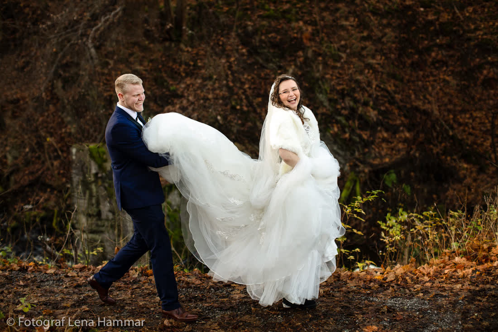
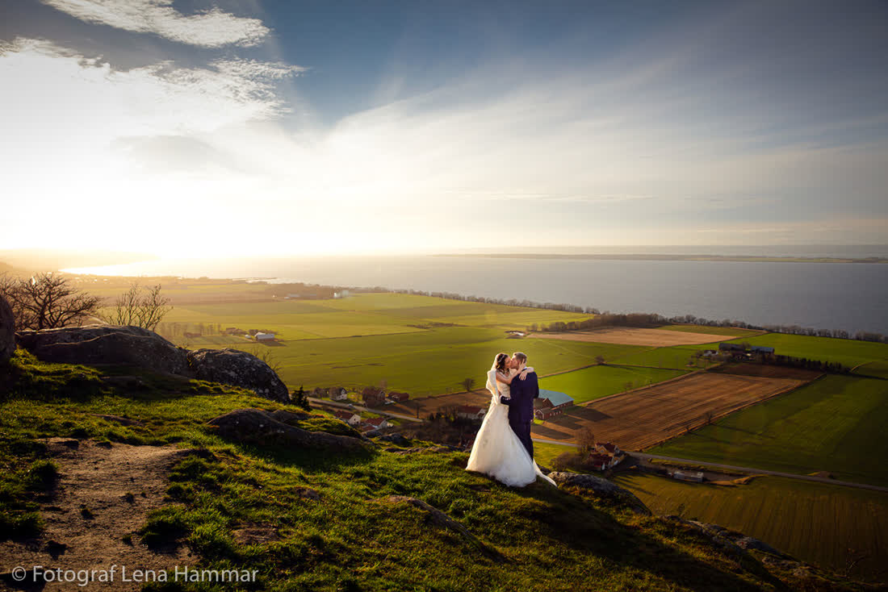
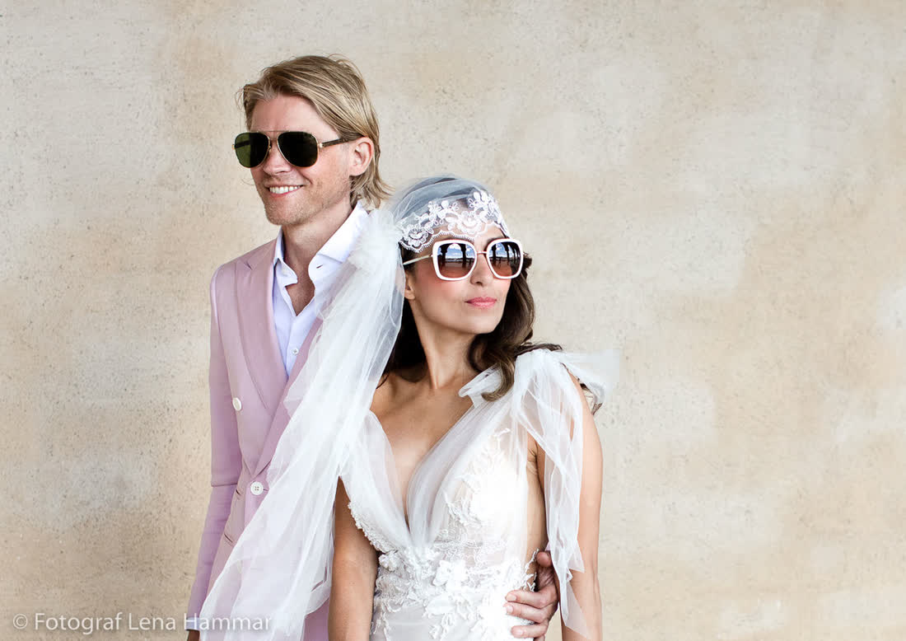
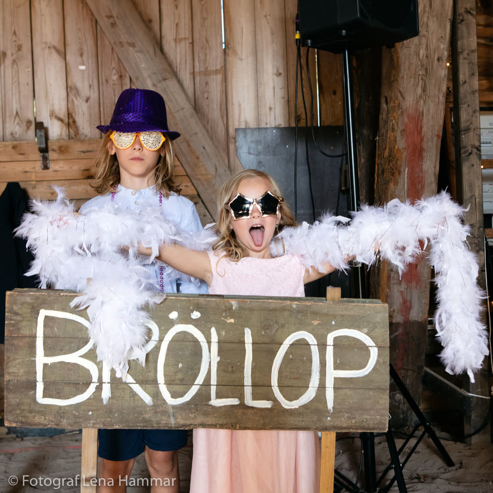
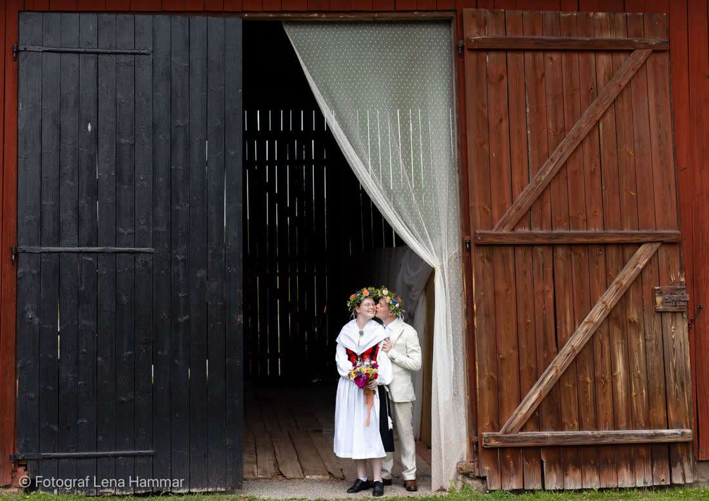

Bröllopsfotograf · Visby, GotlandSommar

Jag är Hanna, född på Gotland och har fotat 160 bröllop på ön. Jag vet vilken strand som är tom klockan sju, vilken kyrka som har bäst ljus efter tre och var vallmon blommar i år.
 Visby
Visby
 Fårö
Fårö
 Gårdsbröllop
Gårdsbröllop
 Elopement
Elopement
Ett urval från säsongen 2026. Mest sol, en del blåst, en storm på Fårö som blev årets bästa bilder.











Jag fotar med två kameror, ett par gympaskor och en nödväska med plåster, säkerhetsnålar och Gotlandsdricka. Den har räddat fler bröllop än jag kan räkna.
Jag är bäst när det händer saker. Säg till mig om ni vill ha 40 minuter uppställda gruppbilder. Då är jag kanske inte er fotograf. Vill ni ha er moster mitt i ett skratt? Då är jag det.
På vintern fotar jag familjer och lokala företag, typ glassfabriken i Slite.


Fastlandsbröllop? Jag kommer gärna. Färjan står ni för.
"Hanna sprang ut i havet med kameran över huvudet för att få bilden. Hon fick den."
Sara & Johan, Fårö, augusti 2026
Juli-lördagar går 12–18 månader i förväg. Fredagar och september har oftast plats.
Då fotar vi i regnet. Jag har genomskinliga paraplyer i bilen och vet varje valv i Visby innerstad.
Smakprov inom 3 dagar, hela galleriet inom 4 veckor.

Skriv några rader. Jag svarar samma dag, utom när jag står i en åker med vallmo.